IPTCPhotoSender for the Press
カメラから無線で写真を受信し、IPTC メタデータ（写真説明）を付けて FTP で送稿するまでを、iPhone / iPad 1 台で完結できる報道・スポーツフォトグラファー向けアプリです。本ガイドは各タブの操作を順に説明します。
送稿する写真を登録し、メタデータを付けて送信する中心のタブです。
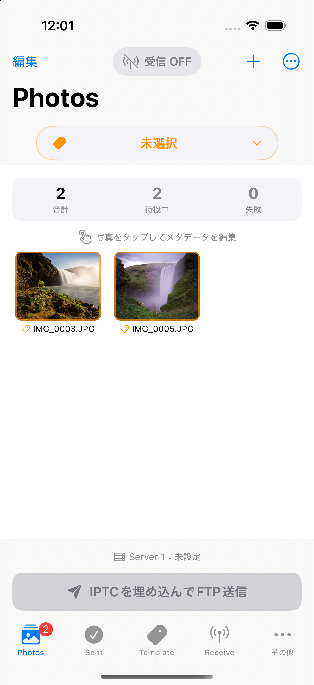
Add Photos ／ ＋ ボタン
送信する写真をタブに登録するためのボタンです。登録写真が 0 枚のときは画面中央に「Add Photos」が表示されます。1 枚でも登録されると「Add Photos」は消え、以降は右上隅の「＋」ボタンから登録します。
Edit（左上隅）
タブ上の写真を選択して、選んだ写真の削除、テンプレートの適用、選択した写真だけの送信（選択送信）ができます。1 枚ずつの送信は、写真をタップして開く編集画面からも行えます。
…（右上隅）
タブ上にあるすべての写真へ同じテンプレートを一括で適用します。また、すべての写真を削除することもできます。
Receive（中央上）
カメラから送信される写真を受信します（内蔵サーバーの動作をオンにします）。
テンプレート選択ボタン（中央 Receive の下）
Receive で写真を受信する際、ここで選んだテンプレートが適用された状態で取り込まれます。（受信後も、Edit から何度でも別のテンプレートを適用し直せます。）
Embed IPTC & Send via FTP ボタン（下段タブの上）
写真に適用されているテンプレート（写真説明メタデータ）を最終確定し、FTP で送信を開始します。このボタンの上には、現在選択されている FTP 送信先が表示されています。
登録された写真のアイコンをタップすると、その写真の編集画面が開きます。
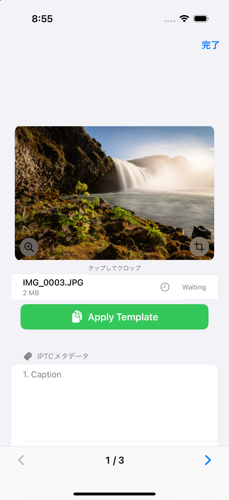
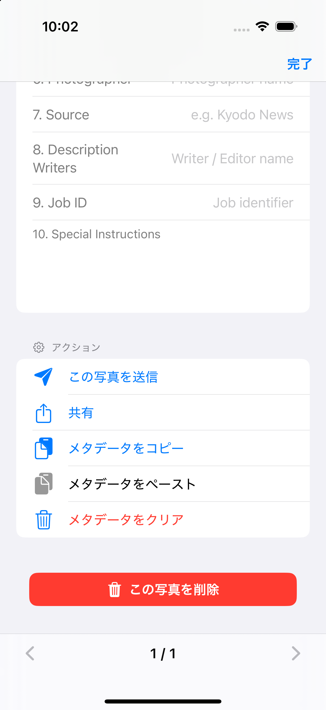
{Seq}／{Jseq}）は各写真固有の値が保たれます（上書きされません）。連番は送信時に写真ごとに振られます。Photos タブで送信が完了した写真が、ここに移動します。再送できるほか、再送の際に写真説明をはじめとするメタデータを改めて編集することもできます。基本的に Photos タブの編集画面と同じことができます。
※ あくまでも「再送」なので、トリミングはできないようにしています。トリミングできてしまうと、再送ではなく新規写真の送信になってしまうためです。
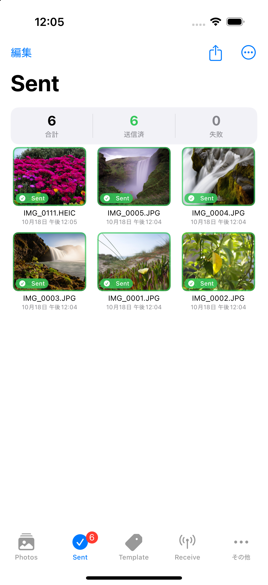
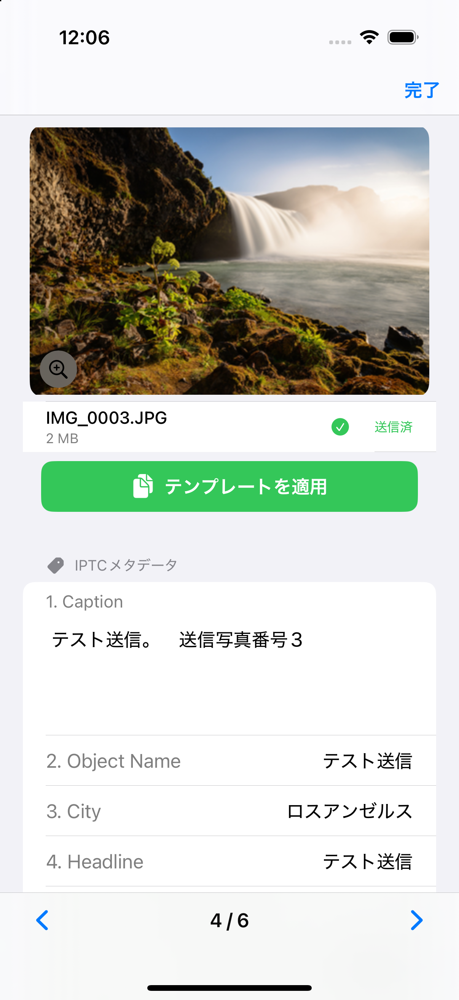
まず下方へスクロールし、Template Field（全 20 項目）のうち、自分に必要な項目へ内容を入力します。
右側の Customize ボタンから、項目の編集画面を開けます。20 項目のうち、左のチェックで「普段表示する項目」を選べます。登録後にまず触ることのない固定の項目はチェックを外しておくと、普段は見えなくなってテンプレートがスッキリし、誤編集も防げます。項目の並び順もここで変更できます。
編集したテンプレートは、上へスクロールして Template 欄の Save ボタンから名前を付けて保存できます。テンプレートは 75 個まで登録できます。また、保存しているすべてのテンプレートを 1 つのファイルとして書き出し、バックアップしたり共有したりできます。
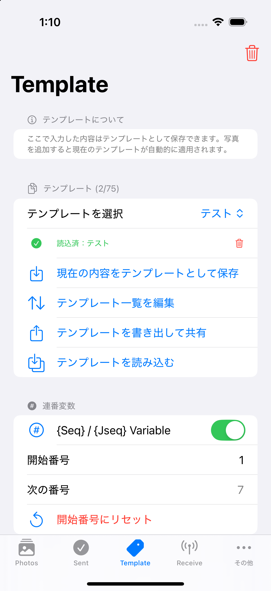
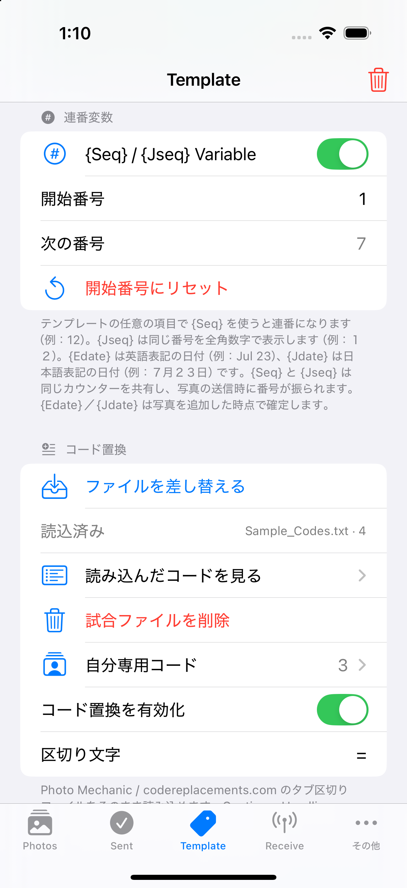
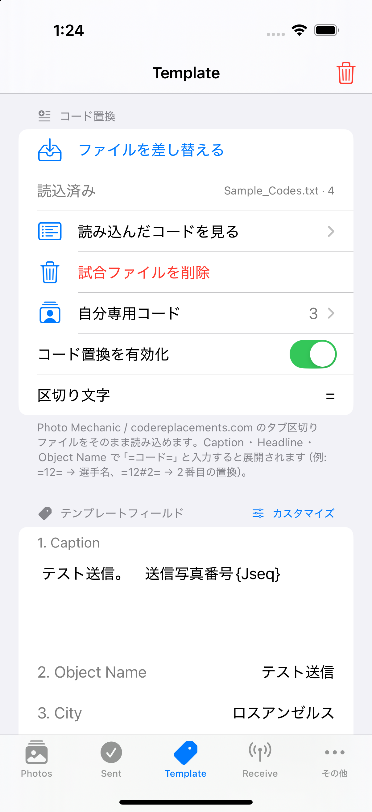
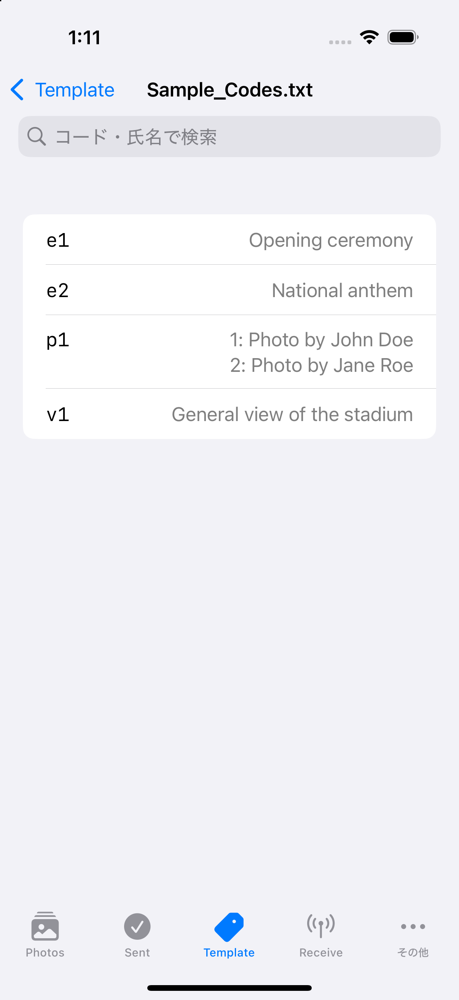
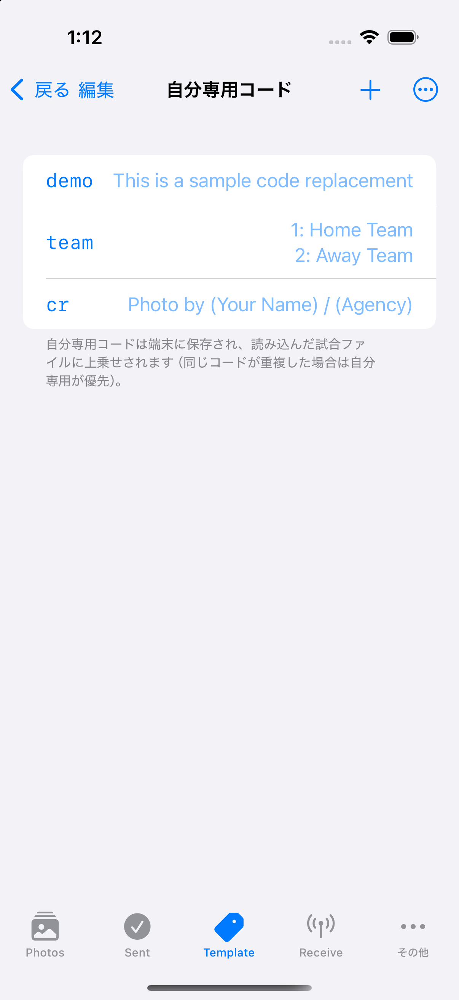
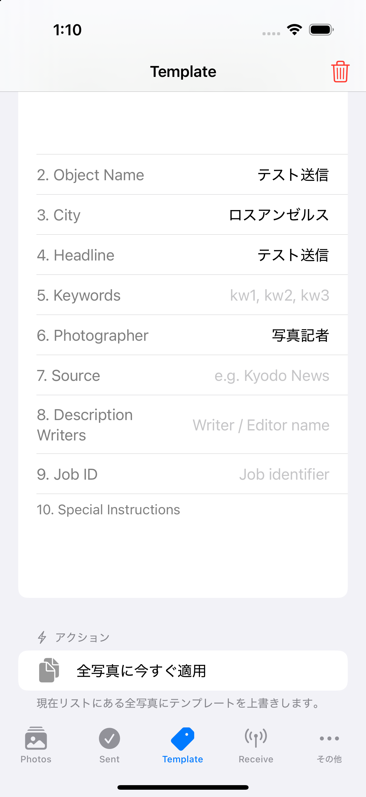
続き番号を振る変数を設定できます。使用・不使用はスイッチで切り替えられ、テンプレートのどの項目の中でも使用できます。
{Seq}、全角数字で入れる場合は {Jseq} を使います。Photo Mechanic などで使えるコード置換サービスを利用できます。コードはダウンロードして使えるのはもちろん、そのコードに自分で作ったコードを足して使うことが、アプリだけで完結してできます。自作のコードは共有・保存・並べ替えができます。
テンプレートに使うと、実際の写真へ適用するまではコード表示のままなので、変数のような使い方もでき、活用法はユーザーのアイデア次第で広がります。Photos タブや Sent タブで個別の写真に使う場合は、コードを入れた瞬間に変換されます。
コード変換の「挟み文字」は初期設定では = ですが、自分の使いやすい文字に変更できます。
カメラから写真を受信するためのサーバー情報を設定するタブです。
3 つのページがあります。
An all-in-one wireless workflow for press and sports photographers: receive photos from your camera, add IPTC metadata (captions), and send them to your picture desk over FTP — all on a single iPhone or iPad. This guide walks through each tab in turn.
The main tab, where you register the photos to file, add their metadata, and send them.
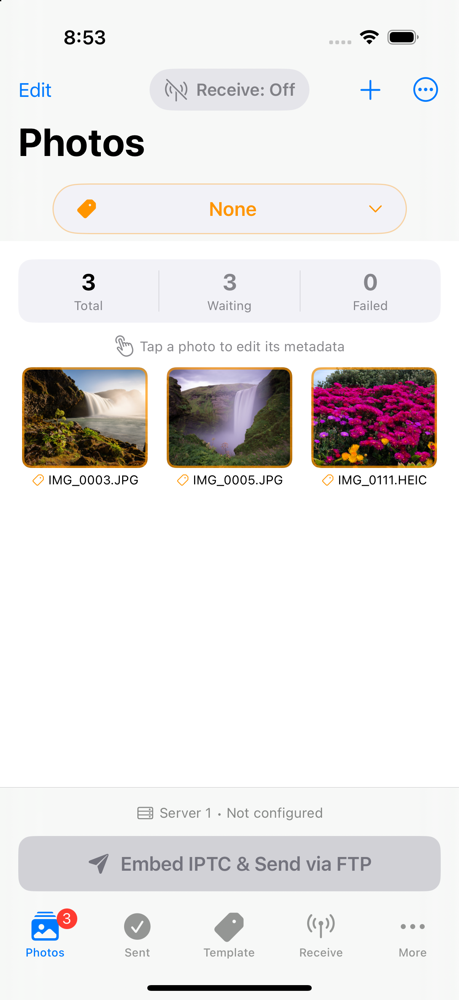
Add Photos / the "+" button
Buttons for registering the photos you want to send. When no photos are registered, "Add Photos" appears in the center of the screen. Once at least one photo is registered, "Add Photos" disappears and you add more using the "+" button in the top-right corner.
Edit (top-left)
Select photos in the tab to delete them, apply a template to them, or send only the selected photos (Send Selected). You can also send a single photo from the editing screen that opens when you tap a photo.
… (top-right)
Applies one template to all photos currently in the tab at once. You can also delete all photos here.
Receive (top-center)
Receives photos sent from your camera (turns the built-in server on).
Template selector (below Receive, center)
When you receive photos with Receive, they are imported with the template selected here already applied. (After receiving, you can re-apply a different template as many times as you like from Edit.)
Embed IPTC & Send via FTP button (above the bottom tab bar)
Finalizes the template (caption metadata) applied to your photos and starts sending over FTP. The FTP destination currently selected is shown just above this button.
Tap a registered photo's thumbnail to open its editing screen.
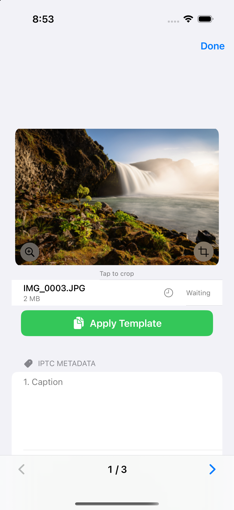
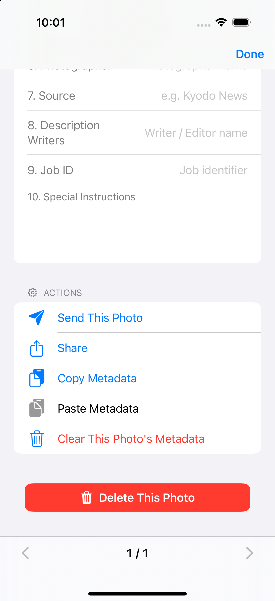
{Seq} / {Jseq}) keep each photo's own values (they are not overwritten). Sequence numbers are assigned per photo at the moment of sending.Photos that finished sending from the Photos tab move here. You can resend them, and you can re-edit the caption and other metadata before resending. In general you can do the same things as on the Photos editing screen.
Note: Because this is strictly a resend, cropping is disabled. If cropping were allowed, it would no longer be a resend but the sending of a new, different photo.
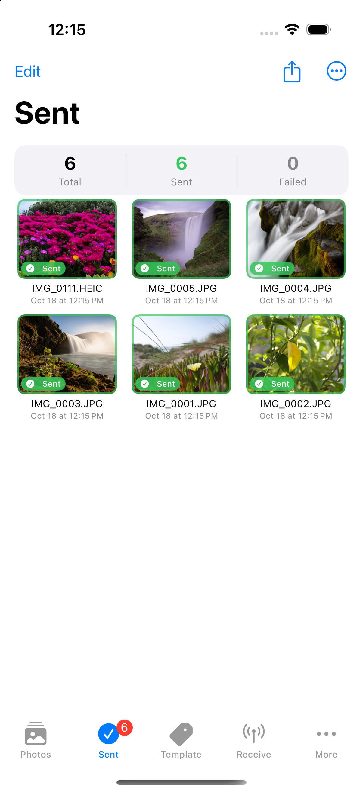
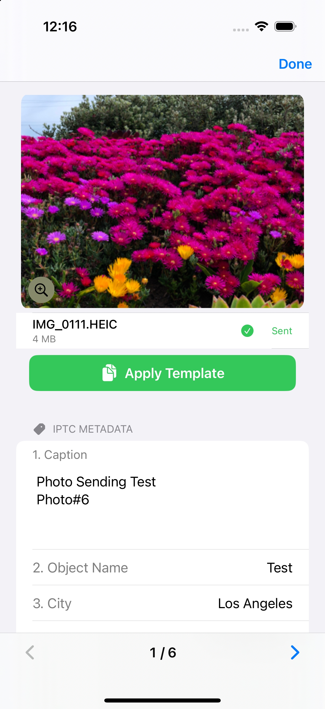
First, scroll down and enter content into the Template Fields (20 in total) that you need.
On the right, the Customize button opens the field editor. Using the checkboxes on the left, you choose which of the 20 fields are normally visible. Unchecking fixed fields you rarely touch after setup keeps them hidden — this makes the template tidier and helps prevent accidental edits. You can also change the field order here.
To save an edited template, scroll back up and use the Save button in the Template section to save it with a name. You can store up to 75 templates. You can also export all of your saved templates as a single file to back them up or share them.
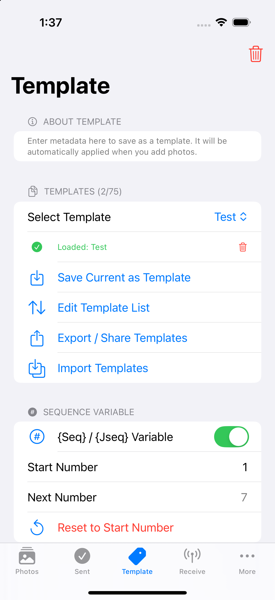
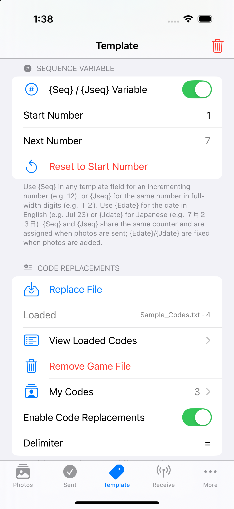
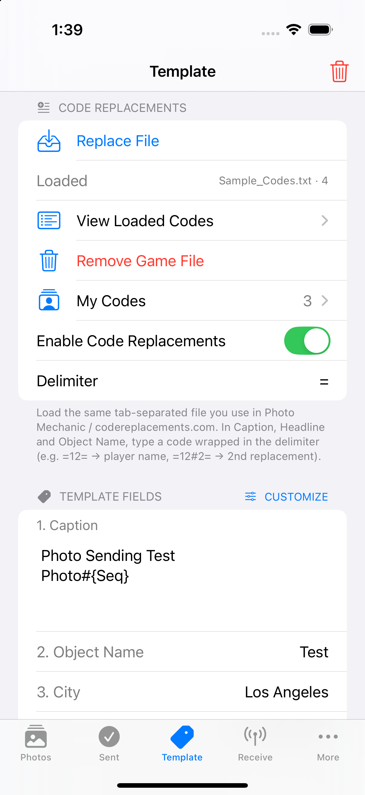
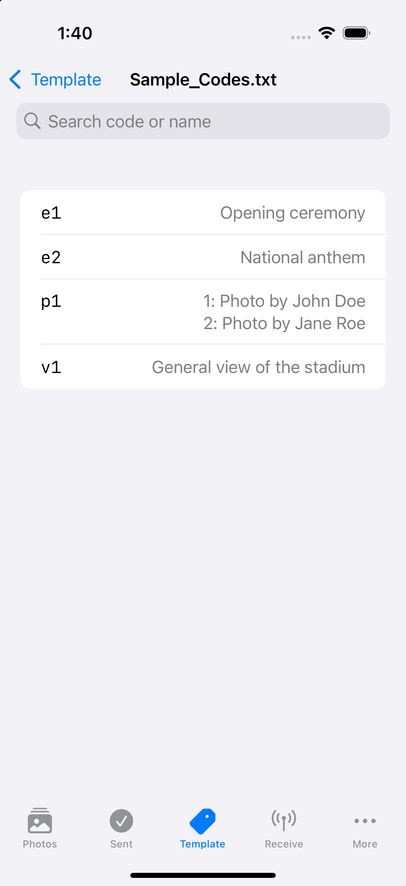
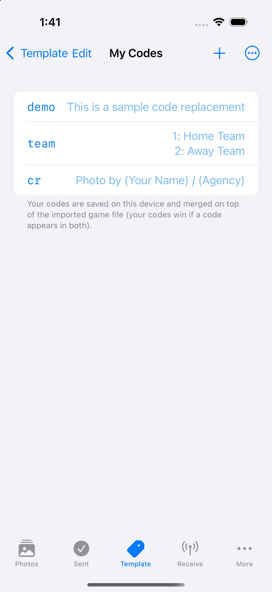
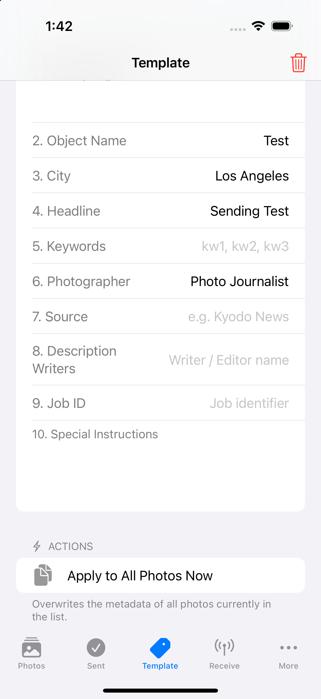
Lets you set up an incrementing number. Turn it on or off with the switch; it can be used inside any template field.
{Seq} for half-width digits, or {Jseq} for full-width digits.You can use the same code-replacement service available in tools like Photo Mechanic. You can of course download and use code files, and you can also add your own codes on top of them — entirely within the app. Your own codes can be shared, saved, and reordered.
When used in a template, a code stays shown as the code until it is applied to an actual photo, so it can also be used like a variable — the possibilities are up to your own ideas. When used on an individual photo in the Photos or Sent tab, a code is converted the moment you type it.
The delimiter that wraps a code defaults to =, but you can change it to whatever character is easiest for you.
The tab for setting up the server information used to receive photos from your camera.
There are three pages: